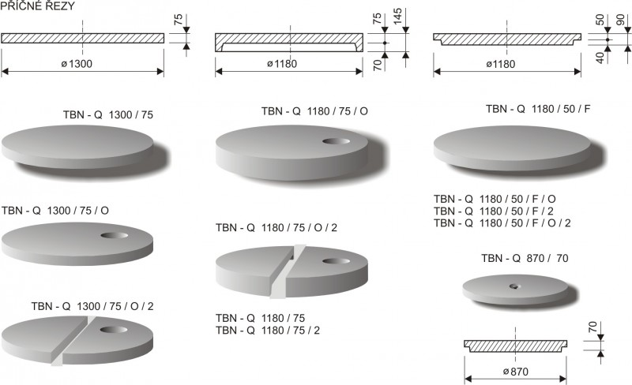
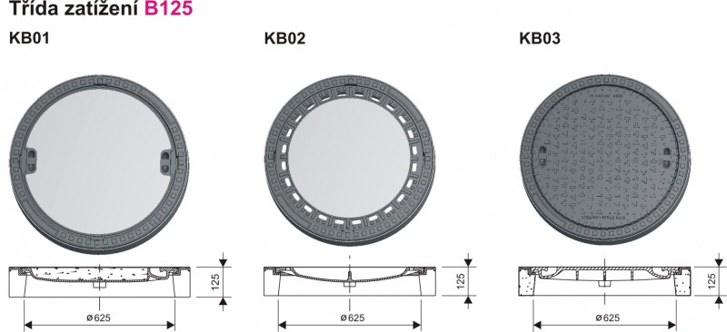
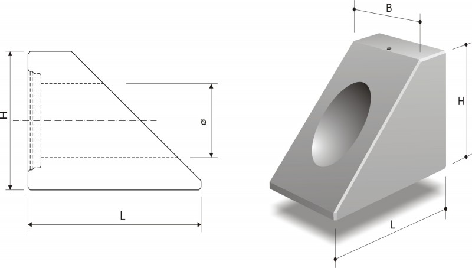

Prefabrikované betonové šachty, trouby a odvodňovací systémy
Společnost BETONIKA spol. s r.o. patří mezi nejvýznamnější české výrobce kanalizačních prefabrikátů. Dodáváme patentovaná monolitická šachtová dna SOLID, vibrolisované trouby, velkokapacitní štěrbinové žlaby a certifikované prvky pro dopravní i vodohospodářské stavby po celé ČR i pro České dráhy.

Technický konfigurátor šachtové sestavy
Zvolte základní technické parametry vaší kanalizační šachty a získejte okamžitou specifikaci prefabrikovaných dílců BETONIKA.
Sestava šachty DN 1000 SOLID
Certifikované betonové stavební dílce
Kompletní portfolio prvků pro výstavbu kanalizačních sítí, odvodnění dopravních staveb a hospodaření s dešťovou vodou.
ČSN EN 1917
Jednolité šachtové dno SOLID
Dno s integrovanou kynetou a nástavci litými z vysoce odolného betonu C 35/45 v jednom technologickém kroku. Zaručuje absolutní vodotěsnost a odolnost vůči agresivním odpadním vodám.

ČSN EN 1917Vibrolisované šachtové dno pro DN 1000
Robustní vibrolisovaná dna pro připojení plastového, kameninového i betonového potrubí. Vybaveno elastomerním těsněním ve spoji skruž-dno.

ČSN EN 1917Kanalizační skruže a kónusy
Vibrolisované skruže a přechodové kónusy s pero-drážkou pro klínové těsnění. Varianty se zabudovanými poplastovanými stupadly s ocelovým jádrem.
 ČSN EN 1917
ČSN EN 1917
Zákrytové a přechodové desky
Železobetonové desky určené pro redukci šachetního profilu z DN 1000 na revizní vstup DN 625 mm při nízkých stavebních hloubkách.
 ČSN EN 1433
ČSN EN 1433
Štěrbinové žlaby velké s roštem
Velkokapacitní prefabrikované žlaby pro odvodnění dálnic, letištních ploch a logistických areálů. Integrovaná litinová krycí mříž s vysokou hydraulickou kapacitou.
 ČSN EN 1433
ČSN EN 1433
Štěrbinové žlaby s průběžnou štěrbinou
Monolitický odvodňovací žlab bez vyjímatelného roštu pro maximální bezpečnost při vysokých rychlostech dopravy na silnicích I. třídy a dálnicích.

ČSN EN 124Uliční a dvorní vpusti s lapači splavenin
Sestavy uličních vpustí z vibrolisovaných prstenců, den s výtokovým otvorem DN 150/200 mm a litinových mříží v rámu s tlumicí vložkou.
 ČSN 73 6201
ČSN 73 6201
Výtoková čela a meliorační dlaždice
Šikmá a svislá betonová čela pro zaústění trubních propustků do příkopů. Součástí dodávky jsou záchytné prahy a meliorační příkopové tvárnice.
Technologické služby přímo na stavbě
Kromě výroby zajišťujeme pro stavební firmy autorizované zkoušky těsnosti stok a přesné jádrové vrtání betonu.
Zkoušení těsnosti kanalizačních stok
Provádíme certifikované měření těsnosti potrubí a šachet vzduchem i vodou dle normy ČSN EN 1610 s vystavením úředního protokolu pro kolaudaci stavby.
- Tlakové zkoušky vzduchem metodou L
- Vodní zkoušky těsnosti šachet metodou W
- Protokoly pro předání investorovi a VaK
Jádrové vývrty do betonu
Vrtání přesných kruhových otvorů do stěn šachet, trub a stavebních konstrukcí diamantovými korunkami pro dodatečné napojení přípojek s těsnicími manžetami.
- Průměry vývrtů od DN 50 do DN 500 mm
- Vrtání pod přesným úhlem i v ose toku
- Osazení elastomerových šachtových vložek
Expedice s hydraulickou rukou
Vlastní a smluvní logistika pro přepravu těžkých prefabrikátů přímo na staveniště s možností přesného vyložení do výkopu nákladními vozy s hydraulickým ramenem.
- Expedice z výrobních závodů Lobodice a Rašovice
- Garantované časové sloty pro plynulost pokládky
- Doprava po celé České republice i na Slovensko
Certifikace, normy a akreditace
Všechny výrobky BETONIKA spol. s r.o. podléhají pravidelnému dozoru autorizované zkušebny ZÚS Praha a splňují nejpřísnější evropské standardy.
Klíčové kontaktní osoby
Naši obchodní zástupci, vedoucí výroby a specialisté kvality jsou vám k dispozici pro technické konzultace i cenové kalkulace.
Ing. Andrea Hýbnerová
Robert Crhák
Ing. Alexandra Škrabalová
Jakub Kopa
Radek Zajíček
Erika Studničková
Sídlo a výrobní areál
č.p. 221, 751 01 Lobodice (pošta Tovačov)
Okres Přerov, Olomoucký kraj
IČO: 00561681 | DIČ: CZ00561681
Zapsáno v OR u Krajského soudu v Ostravě, oddíl C, vložka 241
Poptávka prefabrikátů
Zašlete nám výkaz výměr nebo specifikaci šachet. Náš obchodní úsek vám obratem připraví technické posouzení a harmonogram expedice.